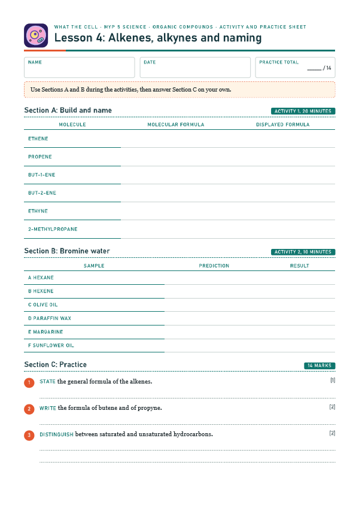

By the end of the lesson you can
- Describe alkenes and alkynes and write their general formulas
- Distinguish between saturated and unsaturated hydrocarbons
- Name straight-chain and simple branched hydrocarbons
- Describe the test for a C=C double bond
Keys: arrows or a presentation clicker move the slides, F for full screen. Slides with a red dot have a video or simulation.
Videos (all 5 minutes or less)
- 4:28
Testing for alkenes using bromine water
FranklyChemistry. While you watch: What colour is bromine water? Slide 9.
Simulations
- Lab
- PhET
PhET Build a Molecule
PhET, University of Colorado Boulder. Try the tasks on the simulation slide.
Print and practise

Activity and practice sheet
Used in the lesson’s activities, with practice questions. Your teacher has the answers.
Download (PDF)Lesson 4 slides
All 19 slides in one file, to read again or print. The video buttons on the slides open YouTube.
Download the slides (PDF)Revising? The Revision tab on the unit page has the unit notes and review.
Notes: Alkenes, alkynes and naming
unsaturated
Contains a C=C (or triple) bond, so more atoms can be added. For example: all alkenes.
test for unsaturation
Bromine water turns from orange to colourless when it is shaken with a compound that has a C=C bond. For example: potassium manganate(VII) also loses its purple colour: used in the Criterion C task.
unsaturated fat
A fat with C=C double bonds in its chains, usually a liquid oil. For example: olive and sunflower oil.
Key words
| alkene | hydrocarbon with a C=C double bond; CₙH₂ₙ |
|---|---|
| alkyne | hydrocarbon with a triple bond; CₙH₂ₙ₋₂ |
| unsaturated | has a double or triple C–C bond |
| functional group | the part of a molecule that decides how it reacts |
| bromine water | orange; turns colourless with C=C |
| IUPAC name | an agreed name that shows the structure |
| methyl | a CH3 branch |